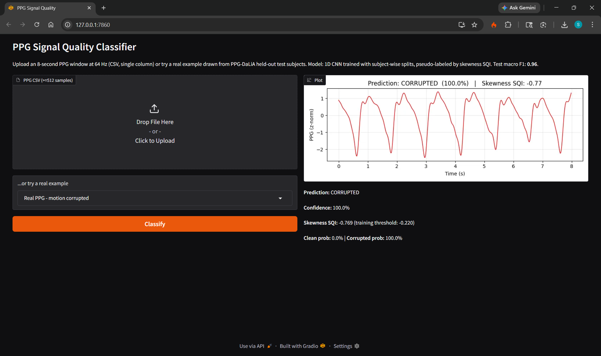
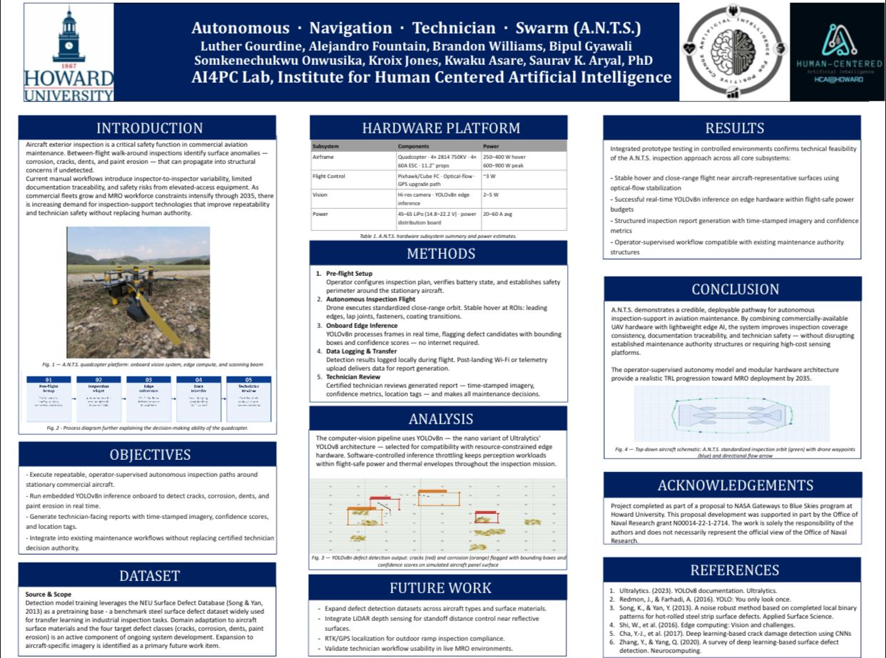
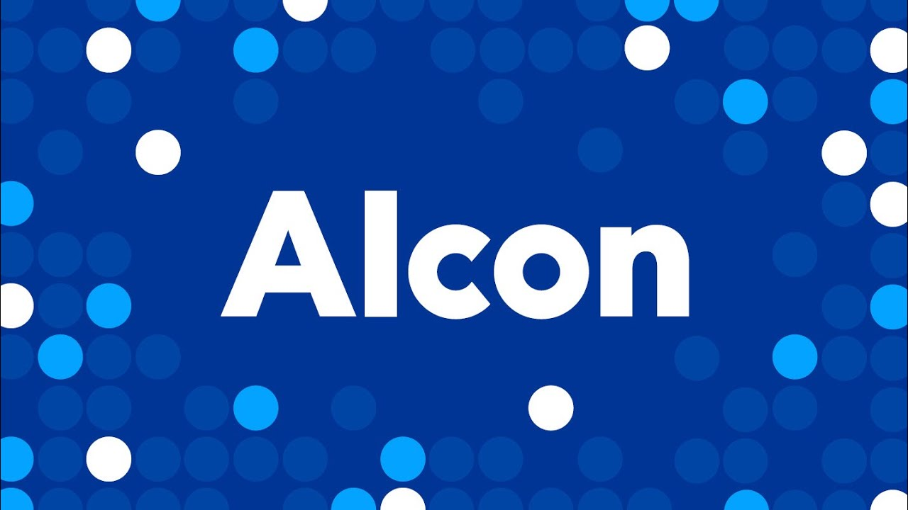
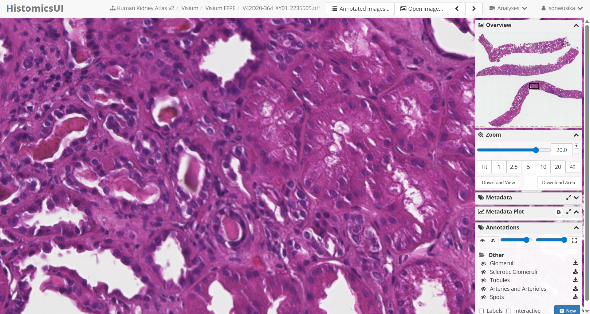
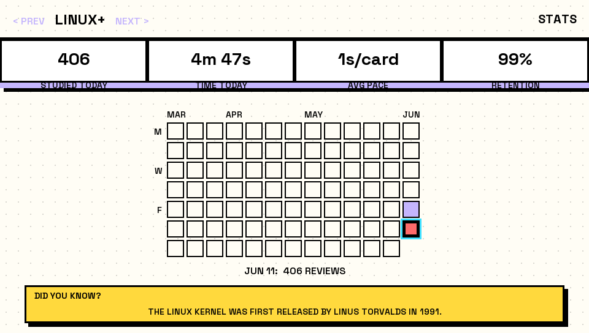
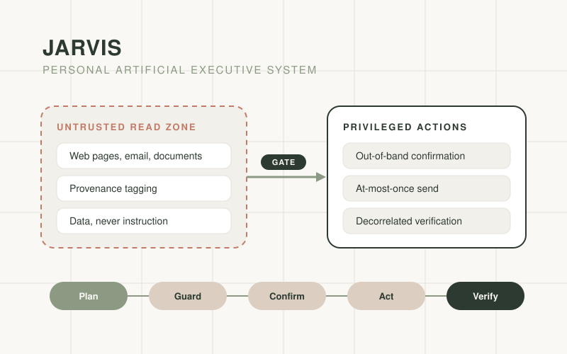
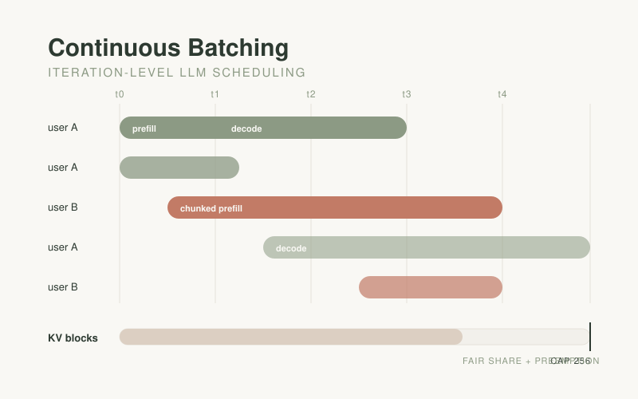
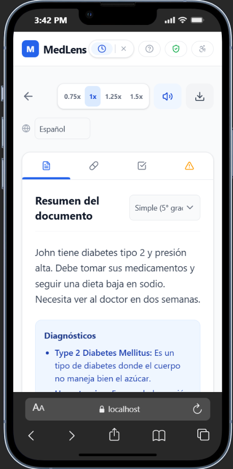
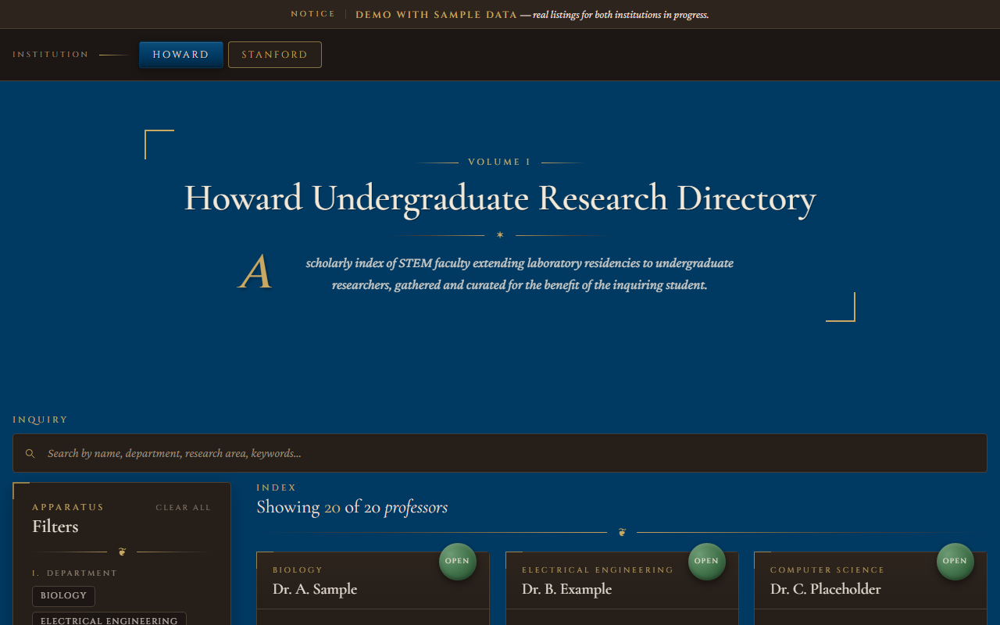

Research Identity
What I am building toward

I am an electrical engineering student at Howard University, with minors in computer science and biology. My work sits where models stop being clean abstractions and start meeting motion, skin, heat, memory limits, and clinical consequences.
The through-line is simple: if a system is meant to work outside a notebook, its evaluation has to look like the world it will enter. That is why my strongest current work is on utility-aligned quality gating for wrist photoplethysmography, with validation across datasets, estimator families, and deployment-style failure modes.
3.88
GPA, BS Electrical Engineering, expected May 2029
5
primary areas: embedded ML, biomedical signals, robust sensing, LLM systems, evaluation
30
nationally selected Alcon Innovate Boldly R&D externs
3.70
bpm MAE from the utility gate versus roughly 14 bpm under skewness gating
Current stance
I am most interested in intelligent systems that can be defended after the demo is over: resource-limited inference, biomedical sensing, signal quality, and the statistics needed to know whether a model actually helped.
Research
Signals, sensors, and proof

Primary Research
ppg-pipeline: Utility-Aligned Quality Gating for Wrist-PPG Heart-Rate Estimation
Co-authored with Dr. Saurav Aryal at Howard University. The manuscript is submitted to IEEE TBME.
The project asks whether wrist-PPG signal quality should be judged by waveform morphology or by downstream heart-rate utility. The answer overturns a widely cited convention inherited from finger pulse oximetry: skewness-based quality gating, the dominant PPG practice, actively harms heart-rate estimation under motion.
- The utility-trained gate achieves 3.70 bpm MAE versus roughly 14 bpm under skewness gating on PPG-DaLiA cycling, replicated across 3 datasets and 4 estimator families with 15-fold LOSO and 3-fold LODO validation, p<0.001.
- Compared FFT, Reiss-style CNN, TROIKA-style, and JOSS-style sparse reconstruction estimators, with subject bootstrap confidence intervals, Wilcoxon tests, effect sizes, and McNemar gate-disagreement analysis.
- A gate trained only on FFT labels cut JOSS-style sparse-reconstruction MAE by roughly 50 percent on two held-out datasets, demonstrating cross-estimator generalization without retraining.
NASA Blue Skies
A.N.T.S. Autonomous Aircraft Inspection
Engineered the perception and inference pipeline for onboard YOLOv8n defect detection on Raspberry Pi hardware under power, thermal, and flight-safety constraints.
The project reached TRL 4 to 5 and was presented through ADMI 2026 and the CRA UR2PhD Research Showcase in New Orleans.
Biomedical AI
FUSION Experience, University of Florida
Processed spatial-omics data in the HuBMAP ecosystem under Dr. Yulia Levites Strekalova, using UMAP and violin plots to study diabetic kidney disease tissue regions and podocyte depletion patterns.
Clinical ML
Atrial Fibrillation Detection from ECG
Built a machine learning pipeline for ECG-based atrial fibrillation detection. The evaluation emphasized minority-class recall and F1 because headline accuracy is weak evidence on imbalanced clinical data.
View source code
Experience
Rooms where the work gets tested

Aug 2026
Alcon Innovate Boldly R&D Externship
Selected as one of 30 students nationally for Alcon's R&D externship in Fort Worth, Texas. Developed EdgeLens, an embedded YOLOv8n intraocular lens defect-detection concept at TRL 3, and BioSim-IOL, a multimodal concept for patient-specific biological response prediction, both presented for R&D leadership review.
Jun to Aug 2026
Pfizer AI Document Processing Externship
Built a page-level RAG pipeline for pharmaceutical PDFs. A hybrid header-rule and LLM segmenter raised page-classification accuracy from 3 of 10 to 10 of 10, and diagnosing a 28-point query-routing regression drove a fix that reached 100 percent recall at roughly 2.3 seconds per query across four benchmarked LLMs.
2026
Qubit by Qubit Quantum Summer Institute
Selected for the Quantum Summer Institute on a full NIST scholarship, extending my hardware and information-systems interests into quantum computing fundamentals.
2026 to present
Campus Leadership
International Student Relations Chair for the Nigerian Student Organization and Hackathon Coordinator on the College of Engineering and Architecture Council.
Aug 2025 to May 2026
HU Quant Society, First-Year Liaison
Designed and delivered quantitative finance workshops, grew active first-year membership by 20 percent, and built a repeatable onboarding pipeline adopted by chapter leadership.
2025 to present
Technical Communities
Member of NSBE, IEEE, ColorStack, and HU Robotics. Current technical orbit includes VLSI, RISC-V, Verilog, autonomous systems, and hardware-software integration.
Honors and preparation
- Presidential Scholar
- Karsh Affiliate Scholar
- Onuoha Fellow
- ColorStack Fellow
- PMIWDC YSI Scholar
- 2024 Valedictorian, rank 1 of 60
- Top 40, Nigerian Physics Olympiad 2023
- MIT certificates: ASICs, Microelectronics, Quantum Software
- Stanford Introduction to Statistics
- CITI Certifications
Engineering Portfolio
Built things, not just intentions

PyTorch, SciPy, Gradio
PPG Signal Quality Classifier
A 1D CNN predecessor to ppg-pipeline, trained on PPG-DaLiA wrist BVP with subject-wise splits. It reached 0.96 macro F1 and was designed as a quality gate before downstream heart-rate or arrhythmia estimation.
View repository
Verilog, RISC-V
RV64 Single-Cycle Processor
Designed a 64-bit RISC-V CPU with ALU, register file, control unit, and memory interface. Verified instruction behavior through cycle-accurate simulation.
View datapath

C++, vitaSDK, Python
VitaDeck: Anki on the PS Vita
Turned a PlayStation Vita into a dedicated spaced-repetition machine that handles 20,000-plus card cloze decks on real hardware. Reverse-engineered Anki's modern zstd-compressed .anki21b format, built the export and grade-replay pipeline into Anki's real scheduler, and debugged hardware-only GPU faults down to GXM texture wrap-mode behavior through coredump analysis.
View repository

Python, Playwright, OAuth
JARVIS Personal Executive System
A security-first personal AI agent built on one question: if an attacker controls the text the agent reads, what is the worst they can make it do? Untrusted content is structurally separated from privileged actions. Shipped so far: a 100/100 browser reliability gate, at-most-once Gmail send behind out-of-band confirmation, and send verification decorrelated across two OAuth tokens, backed by 59 passing tests.
View architecture

Python, Inference Systems
LLM Continuous-Batching Scheduler
An iteration-level scheduler for shared-GPU LLM inference: per-tick batch admission, a strict KV block cap, chunked prefill, and per-user fairness with preemption. Sustained GPU utilization at or above 0.95 under load while holding a light user's median time to first token at 1.2x its solo baseline against a 20x heavier concurrent user.
View scheduler

React, FastAPI, MongoDB
MedLens
Led AI and integration work for a BisonHacks 2026 prototype that turns medical documents into plainer language through an OCR to GPT-4o-mini to OpenFDA pipeline.

Python, scikit-learn, PyTorch
Arrhythmia Detection Pipeline
Built a random forest and CNN ECG pipeline on imbalanced data, with the evaluation centered on clinical recall rather than aggregate accuracy.
View source code
YOLOv8n, Raspberry Pi
A.N.T.S. Defect Detection
Built onboard visual defect detection for aircraft inspection, with attention to thermal, power, and flight-safety limits.

Exploratory Data Analysis
Morehouse SBX Analysis
Analyzed links among student performance, soft skills, and placement outcomes, then presented the work at the 2025 BICE Symposium.
View notebook

React, Vite, Tailwind
Undergraduate Research Directory
A multi-institution directory for finding labs that accept undergraduate researchers, currently covering Howard and Stanford. Each institution keeps its own search state, filters, and theming, with hidden-pipeline callouts and a class-year filter validated through discovery interviews at both schools.
View repository
Contact
Send the hard problem

I am open to research collaborations, embedded ML projects, biomedical sensing work, and conversations with labs building systems that have to survive real constraints.